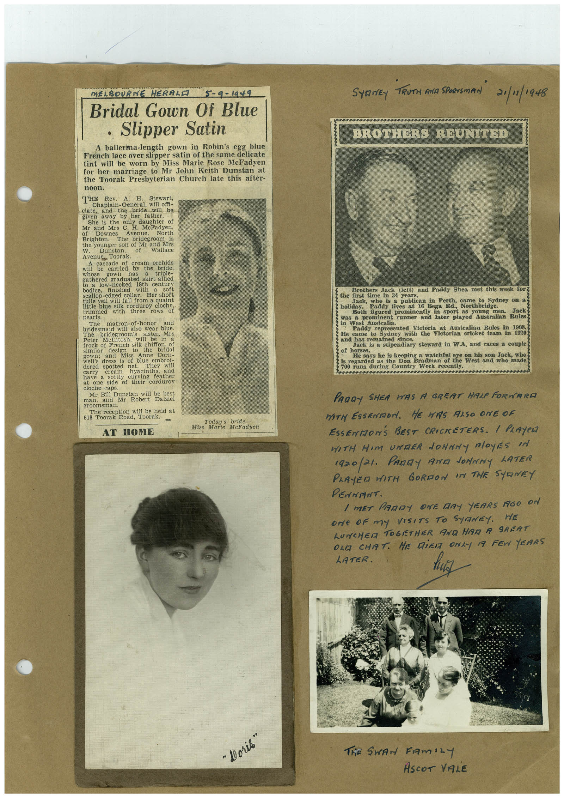

Book 1 · scan 016


Description
Transcription
Context
Review notes
Compare the machine draft with the scan. Handwriting and names need human review.
Artifacts
Edit the artifacts field in this note’s frontmatter to change these records. This summary is generated.
B01-S016-A01 — Newspaper clipping, Photo & Handwritten note — Book 1, scan 016
Types: Newspaper clipping, Photo, Handwritten note
Scope: Whole scanned page; individual items can be split out during review.
Caption: Not mapped yet.
Caption source: Not recorded yet.
Caption status: unmapped
Machine transcription
MELBOURNE HERALE 5-9-1949 Bridal Gown Of Blue • Slipper Satin A ballerina-length gown in Robin's egg blue French lace over slipper satin of the same delicate tint will be worn by Miss Marie Rose McFadyen for her marriage to Mr John Keith Dunstan at the Toorak Presbyterian Church late this after- noon. THE Rev. A. H. Stewart, Chaplain-General, will off- ciate, and the bride will be given away by her father. She is the only daughter of Mr and Mrs C. of Downes H. McFadyen Avenue, North Brighton. The bridegroom is the younger son of Mr and Mrs W. Dunstan, of Wallace Avenuc, Toorak. A cascade of cream orchids will carried by the bride, triple whered graduated skirt allied bodice. low-necked 18th centurs finished with soft scallop-edged collar. Her short ulle veil will fall from a quaint ittle blue silk corduros pearls. three cloche. rows of The matron-of-honor bridesmaid will and also wear blue. bridegroom's Mcintosa will ter. Mrs be in frock of French silk chiffon. gown. 2800 ada Miss to the bridal Anne Corn- well's dress dered spotted net They will have hyacinths. and a softly at one side chi vins of their feather corduroy clocine cans Mr Bill Dunstan will be best man, and Mr Robert Dalziel groomsman. Hoorak toad i be held at Toorak Today's bride Miss Marie McFaduen AT HOME SYRNEY TRUTH ANG SPORTSMAN 21/1/1948 BROTHERS REUNITED Brothers Jack the first time im 34 years. (est) and Paddy Shea met this week forg Jack, who is a publican in Perth, came to Sydney on a Paddy lives at 16 Bega Rd., Northbridge. Both figured prominently in sport as young was a Jack prominent runner and later played Australian Rules in West Australia. Paddy represented Victoria at Australian Rules in 1908. He came to Sydney with the Victorian cricket team in 1920 BRO MSS ECHOENICE SARICE Jack is a stipendiary steward in W.A, and races a couple of horses. He says he is keeping a watchful eye on his son Jack, who is regarded as the Don Bradman of the West and who made 700 runs during Country Week recently. PADDY SHEA WAS A GREAT HALF FORWARD MITH ESSENMON. HE HAS ALSO ONE OF ESSENMON'S BEST CRICKETERS. / PLAYeR WITH HIM UNDER JOHNNY ROyES IN 1920/21. PARTY AND JOHNNY LATER PLAYED WITH GORDON IN THE SYDNEY PENNANT. / MET PARDY ONE DAY YEARS AGO ON ONe oF my VISITS TO SANEY. HE LUNCHER TOGETHER AND HAD A SRERT OLE CHAT. HE DiER ONLY A FEW YEARS LATER. "Doris" The SwAr FAmiLY ASCOT VALE